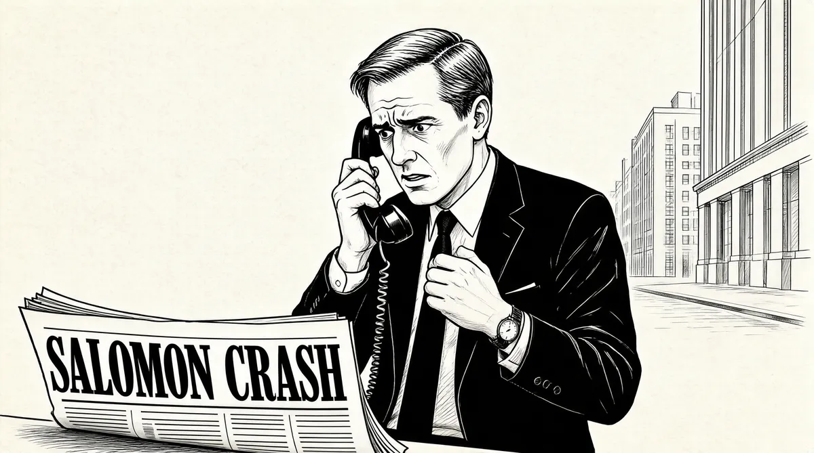

第31章 绞刑架决定未来

1967年的夏天，自美国南北战争以来最严重的骚乱、抢劫、焚烧浪潮席卷美国。之后，马丁·路德·金说：“我们将面临更多像这个夏天那样的骚乱事件，我们将身处右翼接管的法西斯式的危险之中！”1由于运动没有取得很大进展，愤怒的金拒绝支持暴力抵抗；一些激进主义分子认为，学生非暴力协调委员会和金博士的南方基督教领袖会议应该针对那个夏天的冲突混乱和焚烧十字架行动做出正面回应。
奥马哈的非暴力积极分子把巴菲特夫妇——他们两个现在在奥马哈都有影响力——纳入了他们的非正式网络。拉克·纽曼（沃伦在奥马哈最好的朋友尼克·纽曼之妻）和苏珊一起工作，她们向基督教青年会和其他组织施压，要求他们给穷苦地区的分支机构更公平的资金份额。通过由非洲裔美国人朋友罗德尼·韦德2管理的联合卫理公会社区中心，苏珊和拉克送黑人小孩参加夏令营，并且为当地高中的学生成立了一个跨种族的对话团体。3韦德慢慢成为巴菲特家的常客。掌管巴菲特结算室的约翰·哈丁为公平居住请愿书收集了成千上万个签名。尼克·纽曼通过发动沃伦参加各种各样的当地人权组织，直接把他带入了斗争。沃伦的角色不是去出劳力，而是去发言。他、纽曼和哈丁曾经在林肯的立法机构门口为“自由售租房屋”做证。苏珊则多次购买房子，为那些想搬到白人社区的黑人挺身而出。4
近期，沃伦被介绍给了乔·罗森菲尔德，后者经营总部位于附近的得梅因的青年连锁百货商店。5罗森菲尔德和当地以及全美国的政治都有联系，他和巴菲特的政治观点相同。他也是格林奈尔学院的董事，这所学校就像一个小小的激进的孤岛，坐落在艾奥瓦州格林奈尔的一片小村落中间。6思想解放的学生们毕业以后倾向于参加社会服务，而学校也一直致力于提高非洲裔美国人的招收率。
格林奈尔学院1846年成立，80多年后几乎破产。自从罗森菲尔德开始捐助以来的20多年里，他已经花了近1000万美元。7他机智敏锐，同时也被悲伤笼罩，因为在一次交通事故中他失去了唯一的儿子。苏珊很快和他建立了特别的关系。鉴于他们共同的兴趣，罗森菲尔德很自然地想把巴菲特夫妇带入他最重要的事业中。
1967年10月，这所学院以“身处变化世界中的文理学院”为主题举办了一个为期三天的集资大会。会上的发言者云集了20世纪60年代文化界耀眼的名人——包括凭借小说《隐形人》获得美国国家图书奖的作家拉尔夫·埃里森，质疑种族作为生物学概念的社会生物学家阿什利·蒙塔古，普及媒体驱动的“地球村”概念的传播理论家马歇尔·麦克鲁汉，当代艺术家罗伯特·劳森伯格，以及退休的哥伦比亚广播公司前任总裁弗雷德·弗兰德利。然而众人期待的演讲者是马丁·路德·金——诺贝尔和平奖获得者可不是艾奥瓦州的常客。8罗森菲尔德邀请了巴菲特夫妇来参加大会。为了那个星期天早上的活动，他们和5000人一起挤在达比体育馆里。
金和莫尔豪斯学院的院长一起前来，后者将为他作介绍。他们晚了好几个小时，国民警卫队员、警察以及私人安保人员从早上10点起就开始加强戒备。在等待的时间里，观众们饿着肚子，变得坐立不安。
最后，马丁·路德·金终于穿着他布道者的长袍走向讲台。他选择的主题是“在革命中保持清醒”。他声若洪钟，开始引用诗人詹姆斯·拉塞尔·洛韦尔诗作《目前的危机》里的诗句，这也是人权运动的圣歌。
绞刑架上是永恒的真理，
王座上是永恒的谬误，
然而绞刑架决定了未来，
在芸芸众生背后，
上帝站在阴影里，
驻足观望。9
他谈到了受难的意义。受甘地鼓舞而转向非暴力抵抗的他引用了《登山宝训》里的内容：为父受迫害的人有福了，因为天国是他们的；温柔的人有福了，因为他们将继承大地。
苏珊被他充满力量的话语深深感动，她看到自己的丈夫也深受感动。10巴菲特总是跟有气势、充满魅力的演讲者有共鸣。现在他看到马丁·路德·金就站在他面前：这个人充满道义勇气，曾经因为自己的信仰被殴打，被投入监狱，被戴上脚镣从事艰苦的劳动，被鞭抽棒打。尽管遭受反对和暴力，而取得的成功有限，他仍然践行其主张将近10年。马丁·路德·金曾经这样描述非暴力的力量：“它是解除对手武装的方法。它揭穿了其道德伪装，削弱了其斗志，唤醒了其良知……甚至即使对手想杀死你，你也要坚定内心的信念。有些事物是如此珍贵，有些事物是如此值得珍视，有些事物是如此有价值，它们值得我们为之牺牲。如果一个人还没有发现他可以为之牺牲的事物，他就是苟且活着。当一个人发现了这一点，他就有了力量。”11
马丁·路德·金是个先知，他看到了荣耀，看到了现实中的邪恶，看到了人们因为面临恐惧而从睡梦中惊醒。他呼吁他的追随者们也置身这个现实中。他说，基督教一直坚称我们心中的十字架重于我们的王冠。他在很多次讲演中重复的一句话打动了巴菲特的心，刺穿了他的理性。12
“法律不会改变人的心灵，”他说，“但能阻止人的无情。”
他用他洪亮的声音说出这句话，接着继续讲下去，以这句话作为演讲主题。
苏珊经常对丈夫说，生活里有很多比坐在房间里挣钱更有意义的事情。1967年10月，处于人权斗争痛苦中的巴菲特给合伙人写了一封特别的信，这封信表现出他的想法发生了一些改变。这封信比他每年写给股东们的年度报告要早，里面只展示了他的策略而没有披露这一年即将收获的成果。“在市场行为过度反应的模式里，我的分析方法价值有限，”他接着写道，“和我更年轻和钱更少的时候相比，现在为了得到更加出色的投资业绩，我从自己个人的兴趣出发，使用的方法比以前要少一些强迫性……我和目前的现实不同步。但是有一点我清楚，我不会摈弃先前的方法，因为我理解它的逻辑（尽管我发现运用起来有困难），即使它也许意味着放弃大的、显然很轻易得到的利益，我也不愿使用我根本不了解、尚未有过成功经验因而也许会导致巨大且永久的财产损失的方法。”
他提出“少一些强迫性的方法”的另外一个原因是：个人目标。他说他的个人目标已经开始闯入：“我愿意拥有一个能兼顾大量非经济活动的经济目标……我很有可能限制自己只接触相当简单、安全、有利润且令人愉悦的投资。”
接下来，巴菲特的举动让合伙人吃了一惊，他把之前设定的每年超过市场10个点的目标下调为5个点——或只挣9%，无论哪一个指标，都是变少了。如果他们能在别的地方找到更好的投资，他们可以走，他不会责备他们。
他明白这是在冒险。一些热门的新共同基金比合伙公司做得好得多，一年之内资金可以翻番。每一年的1月，合伙人们可以加钱或者抽钱。许多其他的船长正预测阳光会更加明媚。
然而在时间安排上，他宣布降低目标最终还是对他有利。1966年道琼斯指数的表现非比寻常的糟糕。13一些合伙人被市场的动荡所动摇，建议他卖掉股票。而沃伦不为所动，最后合伙公司以高出36个点的成绩击败道琼斯指数，这是合伙公司成立10年来的最好纪录。“如果你不能加入它，就打败它。”他写道。14因此，他给合伙人一个拿钱到别的地方的机会，现在是个不错的时机。
这个策略的另一个附带作用是测试他们对他的信任。他们是在不知道他最新一年真正业绩的情况下作决定的。如果他们继续留下来，那是因为他们对他的信任以及他们愿意接受他更适度的目标。每年超过市场5个点，如果在较长的时间内滚动投资，也会产生巨大的财富。（假设道琼斯指数平均每年增长4%，合伙人投入到合伙公司的1000美元经过20年，每年增长9%，将会变成5604美元——比投资道琼斯指数挣2191美元多出3413美元。）即使本杰明·格雷厄姆以每年超出市场2.5%的业绩打败市场，巴菲特修正后9%的下限还是比拥有一般债券要多赢利2%甚至更多。这样年复一年，而且没有亏钱，最后的结果会让人吃惊。和他在一起，投资人只要承受少量的风险，就能得到惊人的回报。不过，通过调低目标，他已经在心理上比他的合伙人更为从容，结果也反映了这一点。
1968年1月，第一次，投资人没有急着往合伙公司里加钱，反而撤出了160万美元。但这只是一小部分，每30美元中只有不到1美元去了别的地方。几个星期以后，他公布了1967年的业绩，和道琼斯指数19%的升幅相比，合伙公司的涨幅为36%。也就是说，在两年里，巴菲特合伙公司里的1美元增长超过60美分。
他祝愿离开的合伙人一帆风顺，但言语中也许有一些微妙的讽刺意味：“这对他们来讲很好，因为他们中的大多数有能力和动力超过我们的目标，而且我也从努力争取好结果的状态中解放出来，因为在目前的条件下，我也许不能达到那样的业绩。”15
“金融天才是一个上涨的市场。”正如肯尼思·加布尔雷思后来说的那样。16
现在，巴菲特有更多的时间追求他所谈到的“个人的兴趣”，而压力较过往更少——至少理论上是这样。金的那次演讲以后，罗森菲尔德轻易地聘请巴菲特成为格林奈尔学院的董事。鉴于巴菲特不喜欢委员会和会议，这足以说明他被这次大会感动得有多深，他和罗森菲尔德的关系有多么亲密。自然而然，他直接进入财务委员会，在那里他发现了一群具有同样思维的人。鲍勃·诺伊斯是主席，他经营一家名叫仙童半导体的公司，专门生产电子产品电路——巴菲特对此知之甚少而且没什么兴趣。诺伊斯是格林奈尔学院的毕业生——他曾经因为偷了一头猪到夏威夷式的晚会上烧烤而被学校开除，这一行为在这个养殖生猪的州是严重的错误——似乎前途不可限量。17然而“他是一个相当普通的人，看起来一点儿都不像个科学家”，巴菲特说。最重要的是，诺伊斯憎恨等级制度，而对弱者充满爱心，这和格林奈尔的精神是一致的。
巴菲特似乎也感觉到了为人权再多做一些事情的迫切性。他认为他可以利用自己的大脑和金融智慧更好地服务于这项事业。罗森菲尔德开始将巴菲特介绍给民主党人士，巴菲特开始和艾奥瓦州的民主党参议员哈罗德·休斯以及准备竞选参议员的吉恩·格伦打交道。
接着，1968年3月，美国最有争议的人物、亚拉巴马州前州长乔治·华莱士为竞选总统抵达奥马哈城市礼堂。18
超过5000人挤进了设计容纳1400人的空间，人们争相一睹这个7年前竞选州长时在讲台上喊出“现在隔离，明天隔离，永远隔离”的人。19他的支持者只花了不到8分钟就收集到足够的签名让他有资格在内布拉斯加州获得提名。空气中弥漫着臭气弹的气味。当华莱士开始讲话的时候，示威者们朝讲台上扔棍子、布告碎片、纸饮料杯以及石头。20椅子到处飞舞，木棍打裂了，鲜血飞溅，警察用钉头槌驱赶人群。打斗沿着第16街蔓延，暴徒们把司机从汽车里拖出来殴打。人们开始扔燃烧瓶，火焰在周围肆虐，人行道上满是碎玻璃，抢劫者纷纷涌入商店。几个小时以后暴力平息了，平静最终降临。接着，一个不当班的警察射杀了一间当铺里的一个16岁黑人男孩，他误以为男孩是抢劫者。21
接下来的几天里，高中学生们走出教室，砸窗户、放火。22几天以后，警察和装备有自动武器的狙击手们出动并逮捕了几个人，其中包括“奥马哈黑豹”组织的成员。23
整个夏天，种族暴力持续发生，而苏珊一直没有停止活动。她信任她和社区不错的关系，而且没有考虑个人的安危。沃伦并不总知道她做的事情的细节，不过确实感觉到有时她把别人的利益置于自己的利益之上太多了。他自己对暴力的恐惧和对暴民统治的害怕根源于上一辈。
霍华德·巴菲特一次又一次对他的孩子们详述了他在16岁时亲眼见到的一幕——数千人集中到道格拉斯县法院大楼前，他们破门而入，企图对奥马哈市长处以私刑，并且殴打、阉割了一个被指控强奸的上了年纪的黑人。接着，他们把他的尸体拖到大街上，朝尸体射击，并且点火焚烧。法院大楼暴乱是奥马哈历史上最耻辱的事件。许多暴力行径霍华德都没看到，不过亲眼见到这些暴徒把一根街灯柱变成了一个临时绞刑架，奥马哈市长在关键时刻被营救之前，就被一个索套套住脖子悬挂在了绞刑架上。24后来他在医院待了很长时间才恢复过来。在霍华德的余生中，这段记忆一直萦绕在心。25他亲眼看到了正常人、普通人如何瞬间变成一个暴徒,把人性中隐藏最深的部分表现出来。
早在这年之前马丁·路德·金就提出警告，大众社会动荡不安可能会导致法西斯主义。这对沃伦·巴菲特而言并不需要任何解释。他对弱者的支持超出直觉，部分是依靠这种逻辑。很多人认为这种事情在美国是不可思议的，不过看起来不可能的事情一次又一次发生。法律不会改变人的心灵，马丁·路德·金说，但是可以阻止人的无情。不过，无情的人是谁？这个他并没有说。
几个星期后，马丁·路德·金飞往孟菲斯市发表演说。他回忆起在纽约刺伤他的一个妇女，以及总有谣言说有刺客在等着他。“我不知道将会发生什么事情，”他告诉听众，“前面还有困难的日子。但是这些现在对我都无关紧要，因为我已经想开了。”第二天，4月4日，当他站在洛林汽车旅馆的阳台上准备发表演说号召清洁工人的运动时，被子弹射中颈部身亡。26
悲痛、愤怒以及沮丧从美国的黑人社区里涌出，把市中心变成了激战区。
同时，数万名学生在大学校园内举行反对越战的示威游行。越共已经发起了新年攻势，袭击了100个越南南部城市。美国人被一张南越警察局长近距离射杀越共游击队员头部的照片吓坏了，这是共产主义者第一次从抽象的名词变成了具体的人。美国政府拒绝了大多数推迟征兵的要求，最终将中上阶层家庭的儿子们推到了参战的风险中。公众的情绪瞬时改变，开始反对这场战争。而到了马丁·路德·金被害的时候，这个国家感受到革命似乎随时都有可能爆发。
很多人以各种各样的方式表明，他们确实受够了，已经被压制够了。巴菲特的朋友尼克·纽曼突然宣布再也不会参加不接纳犹太人为会员的俱乐部的会议了。27沃伦深为感动，也采取了措施。自他与格雷厄姆和纽曼交往以来，他就脱离了20世纪50年代的种族隔离文化以及他家老一辈人的反犹太主义，而和广大范围内的犹太人建立了友谊和生意联系。甚至在有些想法上，他似乎对犹太人有一种个人的认同感。犹太人被孤立的社会地位和他自己不适应环境的感觉相符合。一段时间以前，他已经悄悄地退出了扶轮社，作为会员资格委员会的成员，他厌恶它的偏见。不过他从来没有告诉任何人理由。现在他的个人计划是帮助他的一个犹太人朋友赫尔曼·戈尔斯坦加入奥马哈俱乐部。
鉴于像奥马哈俱乐部等机构捍卫自己的排外政策的理由之一是“他们有自己的俱乐部，不承认我们”，巴菲特决定请尼克·纽曼提名让他加入全为犹太人的高地乡村俱乐部28。其中有些会员提出反对，使用与奥马哈俱乐部同样的逻辑：因为他们的俱乐部不接受我们，所以我们不得不成立自己的俱乐部，那么现在我们为什么要吸收那些异教徒呢？29但是有一些犹太法师出来干预，反诽谤联盟的一位发言人也代表巴菲特出面了。30巴菲特一被接纳，就以自己犹太人俱乐部会员的身份不动声色地攻击奥马哈俱乐部，赫尔曼·戈尔斯坦最终被投票同意加入。这样，会员身份上长期存在的宗教壁垒被打破了。
巴菲特设计了一个聪明的解决方案，可以让俱乐部做正确的事情而不会和任何人发生冲突。这避免了他所害怕的事情，不过也反映了他的推断——也许是正确的——游行和示威并不会改变富商们的想法。
他现在是奥马哈的著名人士，这也起到了作用。他再也不是一个暴发户，他有影响力。那个曾经为了从奥马哈俱乐部的黑名单上被画掉而到处做工作的人，现在可以单独影响奥马哈最优秀精英机构之一的俱乐部自成立以来最重要的组织改变。
不过巴菲特还想发挥更大作用，而不仅仅是一个当地的名人。他明白，利用他的钱，他可以在国家层面上产生影响，因为1968年是个选举年。为了让当前的总统林登·约翰逊下台——而有利于一位反战的候选人，需要花很多钱。
越战是这场竞选的中心事件，而且，来自明尼苏达州的自由主义参议员吉恩·麦卡锡一开始是唯一愿意在初选中和约翰逊竞争的民主党人。
这场竞选从新罕布什尔州开始，在那里，一支麦卡锡的反战“儿童十字军”派出了将近1万名积极分子和大学生冒着大雪敲开了这个州的几乎每一扇门。他赢得了这个州42%的选票，这是一个表明反对现任总统的强烈信号。很多学生、蓝领工人和反战选民们把麦卡锡看成是一个英雄。巴菲特成为他的内布拉斯加战役的财务主管，他和苏珊参加了一次竞选集会。她笑逐颜开，穿着一件吸引眼球的衣服，戴着印有麦卡锡名字的帽子。
接着约翰逊宣布退出竞选，而约翰·肯尼迪的弟弟罗伯特·肯尼迪加入角逐，他和麦卡锡经历了痛苦的却看不出谁明显领先的竞赛，直到肯尼迪赢得了加利福尼亚州初选的胜利，作为提名候选人他才拥有决定性的领先优势。不过就在胜利的当晚，他被刺客暗杀，24小时后终告不治。接下来，约翰逊的副总统休伯特·汉弗莱宣布参加竞选，他最终赢得了在芝加哥举行的民主党大会的胜利。那是一场乱哄哄的大会，配备棍子和钉头槌的警察和闹事的反战示威者发生了冲突。巴菲特接着支持汉弗莱和共和党的理查德·尼克松竞选，后者赢得了最后的大选。在这以后，麦卡锡好几次改变党派，并且以无党派的身份竞选了几次总统，这削弱了其作为一个严肃的政治家的可靠性。
巴菲特对亲密朋友的忠诚为人所知。然而，在别人的眼里，他对一些关系疏远的人，尤其是公众人物的热情是易变的，会根据他们的境况而此消彼长。在他不安全的感觉里，他经常担心和别人的联系会如何影响他。最终他为和麦卡锡的联系而遗憾，并且淡化处理这种联系。但是他对政治的参与以及承诺提供资金的行为标志着他生活里的重要变化。第一次他留了一点儿空间给投资以外的事情，那就是已经扎根于他家庭的过去，并且还将延展到未来的未知的“非经济活动”。